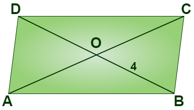

Understanding Quadrilaterals
See The Chapter PDF
Introduction to Class 8 Understanding Quadrilaterals
In class 8, the chapter “Understanding Quadrilaterals”, will discuss the fundamental concepts related to quadrilaterals, different types of quadrilaterals and their properties, different types of curves, polygons and some of the theorems related to quadrilaterals such as angle sum property of quadrilaterals, and so on, with complete explanation.
What are Quadrilaterals?
Quadrilaterals are one type of polygon which has four sides and four vertices and four angles along with 2 diagonals. There are various types of quadrilaterals.
Types of Quadrilaterals
The classification of quadrilaterals are dependent on the nature of sides or angles of a quadrilateral and they are as follows:
- Trapezium
- Kite
- Parallelogram
- Square
- Rectangle
- Rhombus
The table given below represents the different types of quadrilaterals and their properties.
| Quadrilateral | Properties | Figure |
| Rectangle | 4 right angles and opposite sides equal | |
| Square | 4 right angles and 4 equal sides | |
| Parallelogram | Two pairs of parallel sides and opposite sides equal | |
| Rhombus | Parallelogram with 4 equal sides |  |
| Trapezoid | Two sides are parallel |  |
| Kite | Two pairs of adjacent sides of the same length |  |
Revisiting Geometry
As we know, Geometry is one of the branches of Mathematics, that deals with the study of different types of shapes, their properties, and how to construct lines, angles and different polygons. Geometry is broadly classified into plane geometry(two-dimensional) and solid geometry (three-dimensional geometry).
Introduction to Curves
A curve is a geometrical figure obtained when a number of points are joined without lifting the pencil from the paper and without retracing any portion. It is basically a line which need not be straight.
The various types of curves are:
- Open curve: An open curve is a curve in which there is no path from any of its point to the same point.
- Closed curve: A closed curve is a curve that forms a path from any of its point to the same point.
A curve can be :
Polygons
A simple closed curve made up of only line segments is called a polygon. Various examples of polygons are Squares, Rectangles, Pentagons etc.
Note: The sides of a polygon do not cross each other.
Classification of Polygons on the Basis of Number of Sides/Vertices
Polygons are classified according to the number of sides they have. The following lists the different types of polygons based on the number of sides they have:
- When there are three sides, it is triangle
- When there are four sides, it is quadrilateral
- When there are fives sides, it is pentagon
- When there are six sides, it is hexagon
- When there are seven sides, it is heptagon
- When there are eight sides, it is octagon
- When there are nine sides, it is nonagon
- When there are ten sides, it is decagon
Diagonals
A diagonal is a line segment connecting two non-consecutive vertices of a polygon.
Polygons on the Basis of Shape
Polygons can be classified as concave or convex based on their shape.
- A concave polygon is a polygon in which at least one of its interior angles is greater than 90∘. Polygons that are concave have at least some portions of their diagonals in their exterior.
- A convex polygon is a polygon with all its interior angle less than 180∘. Polygons that are convex have no portions of their diagonals in their exterior.
Polygons on the Basis of Regularity
Polygons can also be classified as regular polygons and irregular polygons on the basis of regularity.
- When a polygon is both equilateral and equiangular it is called as a regular polygon. In a regular polygon, all the sides and all the angles are equal. Example: Square
- A polygon which is not regular i.e. it is not equilateral and equiangular, is an irregular polygon. Example: Rectangle
Angle Sum Property of a Polygon
According to the angle sum property of a polygon, the sum of all the interior angles of a polygon is equal to (n − 2) × 180∘, where n is the number of sides of the polygon.

As we can see for the above quadrilateral, if we join one of the diagonals of the quadrilateral, we get two triangles.
The sum of all the interior angles of the two triangles is equal to the sum of all the interior angles of the quadrilateral, which is equal to 360∘ = (4−2)×180∘. So, if there is a polygon which has n sides, we can make (n – 2) non-overlapping triangles which will perfectly cover that polygon.

The sum of the interior angles of the polygon will be equal to the sum of the interior angles of the triangles = (n − 2) × 180∘
Sum of Measures of Exterior Angles of a Polygon
The sum of the measures of the external angles of any polygon is 360∘.
Properties of Quadrilaterals
Parallelogram
The following are the important properties of parallelogram:
- The opposite sides of a parallelogram are equal and congruent.
- Diagonals of a parallelogram bisect each other.
- The diagonals of parallelogram bisect each other and produce two congruent triangles.
- The opposite angles of a parallelogram are equal and congruent.

Elements of a Parallelogram
- There are four sides and four angles in a parallelogram.
- The opposite sides and opposite angles of a parallelogram are equal.
- In the parallelogram ABCD, the sides AB and CD are opposite sides and the sides AB and BC are adjacent sides.
- Similarly, ∠ABC and ∠ADC are opposite angles and ∠ABC and ∠BCD are adjacent angles.
Angles of a Parallelogram
The opposite angles of a parallelogram are equal.
In the parallelogram ABCD, ∠ABC = ∠ADC and ∠DAB = ∠BCD.
The adjacent angles in a parallelogram are supplementary.
∴ In the parallelogram ABCD, ∠ABC + ∠BCD = ∠ADC + ∠DAB = 180∘

For example,
In the given parallelogram (RING), ∠R = 70°.
Now, we have to find the remaining angles.
As we know, the opposite angles of a parallelogram are equal, we can write:
∠R = ∠N = 70°.
And we know, the adjacent angles of a parallelogram are supplementary, we get
∠R + ∠I = 180°
Hence, ∠I = 180° – 70° = 110°
Therefore, ∠I = ∠G = 110° [Since ∠I and ∠G are opposite angles]
Hence the angles of a parallelogram are ∠R = ∠N = 70° and ∠I = ∠G = 110°.
Diagonals of a Parallelogram
The diagonals of a parallelogram bisect each other at the point of intersection. In the parallelogram ABCD given below, OA = OC and OB = OD.
Consider an example, if OE = 4cm and HL is five more than PE, find the measure of OH.
Given that, OE = 4 cm and hence, OP = 4cm [Since OE = OP]
Hence PE =OE + OP = 4cm + 4cm = 8 cm
Also given that, HL is 5 more than PE,
Hence, HL = 5 + 8 = 13 cm.
Therefore, OH = HL2 = 132 = 6.5 cm
Therefore, the measurement of OH is 6.5 cm
Rectangle
A rectangle is a parallelogram with equal angles and each angle is equal to 90∘.
Properties of rectangle:
- Opposite sides of a rectangle are parallel and equal.
- The length of diagonals of a rectangle is equal.
- All the interior angles of a rectangle are equal to 90°.
- The diagonals of a rectangle bisect each other at the point of intersection.
Square
A square is a rectangle with equal sides. All the properties of a rectangle are also true for a square.
Properties of diagonals of a square:
- bisect one another
- are of equal length
- are perpendicular to one another
Rhombus
Rhombus is one of the special cases of parallelogram. In Rhombus, all the sides are equal and the opposite sides are also equal.
Short Answer Questions(SAQs)
What is a Curve?
A curve refers to a line that is not straight. In other words, it may be any line that is bent to some extent.
What is a convex polygon?
Convex polygon is a polygon each of whose angles is less than a straight angle.
What are the properties of a Parallelogram?
- Opposite sides are equal and congruent
- Opposite angles are equal and congruent
- Consecutive angles are supplementary
- Diagonals of a parallelogram bisect each other
MCQs
1. A quadrilateral with all sides equal and all angles right angles is called?
(a) Square
(b) Rectangle
(c) Rhombus
(d) Parallelogram
► (a) Square
2. Which quadrilateral has exactly one pair of parallel sides?
(a) Trapezium
(b) Parallelogram
(c) Square
(d) Kite
► (a) Trapezium
3. In a parallelogram, opposite angles are:
(a) Equal
(b) Complementary
(c) Supplementary
(d) Not related
► (a) Equal
4. The sum of interior angles of any quadrilateral is:
(a) 360°
(b) 180°
(c) 270°
(d) 540°
► (a) 360°
5. A quadrilateral with only two adjacent sides equal is called:
(a) Kite
(b) Rhombus
(c) Rectangle
(d) Square
► (a) Kite
6. In a rectangle, diagonals:
(a) Are equal and bisect each other
(b) Are unequal
(c) Bisect opposite angles
(d) None of the above
► (a) Are equal and bisect each other
7. The diagonals of a rhombus:
(a) Are perpendicular
(b) Are equal
(c) Bisect opposite angles
(d) Both (a) and (c)
► (d) Both (a) and (c)
8. A quadrilateral with no parallel sides is called:
(a) Kite
(b) Trapezium
(c) General quadrilateral
(d) Parallelogram
► (c) General quadrilateral
9. Opposite sides of a parallelogram are:
(a) Parallel and equal
(b) Parallel only
(c) Equal only
(d) Neither
► (a) Parallel and equal
10. Which quadrilateral has one pair of equal opposite sides and one pair of equal adjacent sides?
(a) Kite
(b) Rectangle
(c) Isosceles Trapezium
(d) Rhombus
► (a) Kite
11. In which quadrilateral do adjacent angles sum to 180°?
(a) Parallelogram
(b) Square
(c) Kite
(d) Irregular quadrilateral
► (a) Parallelogram
12. Which property is true for all parallelograms?
(a) Diagonals bisect each other
(b) All angles are 90°
(c) Diagonals are equal
(d) No sides are parallel
► (a) Diagonals bisect each other
13. The diagonals of a rectangle are:
(a) Bisect each other at right angles
(b) Are equal but do not bisect at right angles
(c) Are perpendicular but unequal
(d) None
► (b) Are equal but do not bisect at right angles
14. In a square, diagonals:
(a) Are unequal
(b) Bisect each other at right angles
(c) Do not bisect angles
(d) Are parallel
► (b) Bisect each other at right angles
15. The sum of interior angles of a kite:
(a) 360°
(b) 180°
(c) 270°
(d) 90°
► (a) 360°
16. Which quadrilateral is both a rectangle and a rhombus?
(a) Square
(b) Rectangle
(c) Parallelogram
(d) Kite
► (a) Square
17. In an isosceles trapezium, base angles are:
(a) Equal
(b) Complementary
(c) Supplementary
(d) Right angles
► (a) Equal
18. Which quadrilateral has diagonals that are perpendicular but not equal?
(a) Rhombus
(b) Rectangle
(c) Square
(d) Parallelogram
► (a) Rhombus